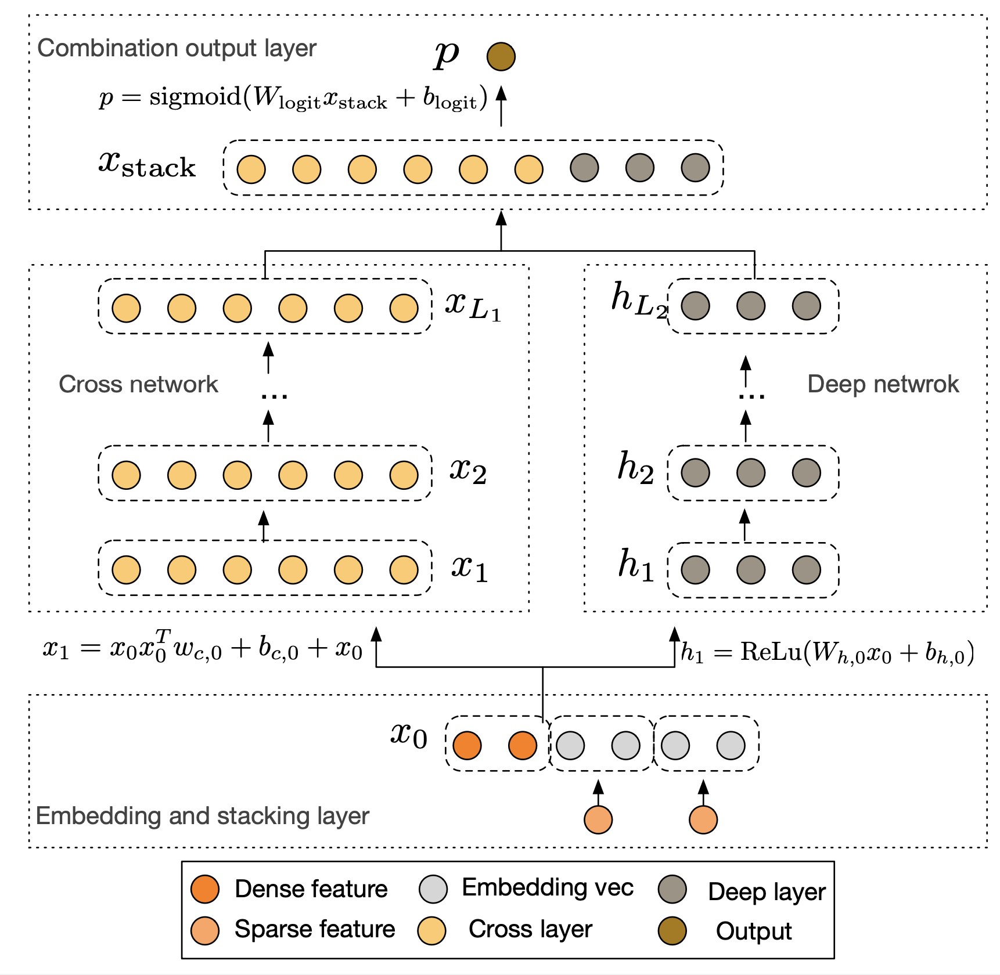
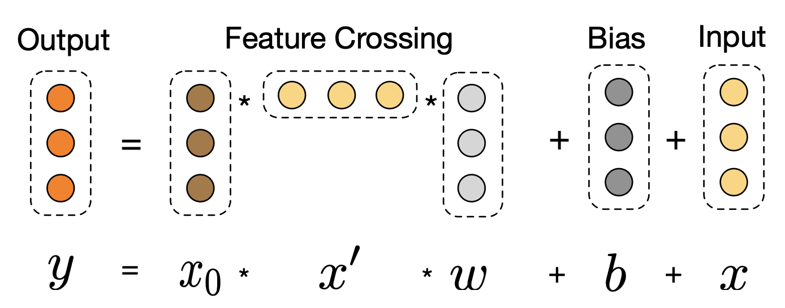
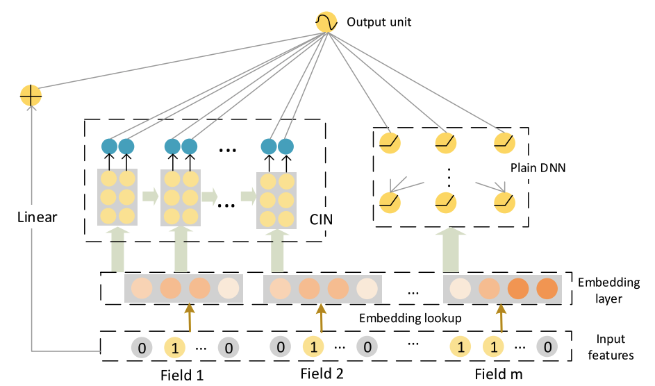
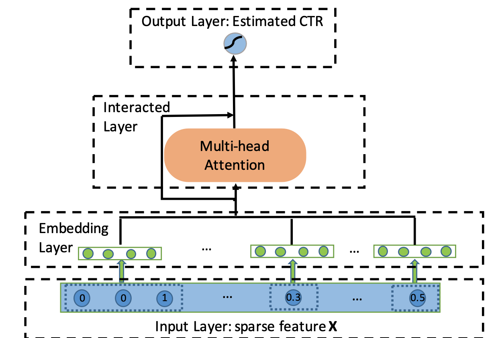
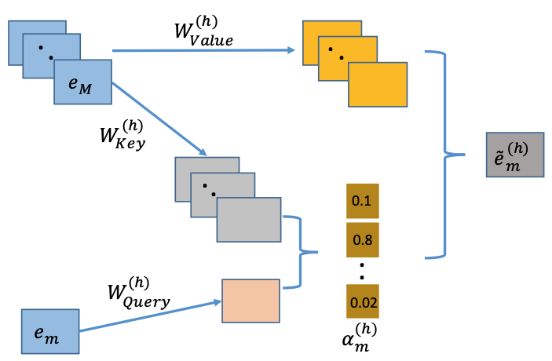

3.2.2. 高阶特征交叉¶
前面我们学了各种二阶特征交叉技术，这些模型能够明确地处理二阶交互，但对于更高阶的特征组合，它们主要靠深度神经网络来学习。深度网络虽然能学到高阶交互，但我们不知道它具体学到了什么，也不清楚这些交互是怎么影响预测的。所以研究者们想：能不能像 FM 处理二阶交叉那样，设计出能够明确捕捉高阶交叉的网络结构？
3.2.2.1. DCN: 残差连接的高阶交叉¶
为了解决上述问题，Deep & Cross Network (DCN) (Wang et al., 2017) 用Cross Network替代了Wide & Deep模型中的Wide部分。Cross Network在每一层都会与原始输入特征做交叉，这样就能明确地学到高阶特征交互，减少了手工特征工程的工作。
{kind=link}

图3.2.7 DCN模型结构¶
DCN的整体结构由并行的Cross Network和Deep Network两部分组成，它们共享相同的Embedding层输入。首先，模型将稀疏的类别特征转换为低维稠密的Embedding向量，并与数值型特征拼接在一起，形成统一的输入向量 \(\boldsymbol{x}_0\)。
这个初始向量 \(\boldsymbol{x}_0\) 会被同时送入Cross Network和Deep Network。
Cross Network是DCN的核心创新。它由多个交叉层堆叠而成，其精妙之处在于每一层的计算都保留了与原始输入 \(\boldsymbol{x}_0\) 的直接交互。第 \(l+1\) 层的计算公式如下：
其中\(\boldsymbol{x}_l, \boldsymbol{x}_{l+1} \in \mathbb{R}^d\) 分别是第 \(l\) 层和第 \(l+1\) 层的输出列向量，\(\boldsymbol{x}_0 \in \mathbb{R}^d\) 是Cross Network的初始输入向量，\(\boldsymbol{w}_l, \boldsymbol{b}_l \in \mathbb{R}^d\) 分别是第 \(l\) 层的权重和偏置列向量。
{kind=link}

图3.2.8 Cross Network¶
这个结构其实就是残差网络。每一层都在上一层输出 \(\boldsymbol{x}_l\) 的基础上，加了一个交叉项 \(\boldsymbol{x}_0 \boldsymbol{x}_l^T \boldsymbol{w}_l\) 和偏置项 \(\boldsymbol{b}_l\)。交叉项很重要，它让原始输入 \(\boldsymbol{x}_0\) 和当前层输入 \(\boldsymbol{x}_l\) 做特征交叉。层数越深，特征交叉的阶数就越高。比如第一层（\(l=0\)）时，\(\boldsymbol{x}_1\) 包含二阶交叉项；第二层（\(l=1\)）时，\(\boldsymbol{x}_1\) 本身就有二阶信息，再和 \(\boldsymbol{x}_0\) 交叉就产生三阶交叉项。所以Cross Network有多深，就能学到多高阶的特征交叉。而且参数量只和输入维度成正比，很高效。
与Cross Network并行的Deep Network部分是一个标准的全连接神经网络，用于隐式地学习高阶非线性关系，其结构与我们熟悉的DeepFM中的DNN部分类似。最后，模型将Cross Network的输出 \(\boldsymbol{x}_{L_1}\) 和Deep Network的输出 \(\boldsymbol{h}_{L_2}\) 拼接起来，通过一个逻辑回归层得到最终的预测概率。
DCN用Cross Network明确地学习高阶特征交叉，再配合DNN学习复杂的非线性关系，这样就能更好地处理特征组合问题。
核心代码
DCN的核心在于Cross Network的交叉层计算。每一层都保持与原始输入 \(\boldsymbol{x}_0\) 的交叉：
# Cross Network的交叉层：x_{l+1} = x_0 * (x_l^T * w_l) + b_l + x_l
# 输入 x_0: [batch_size, feature_dim]
x_l = x_0 # 初始化为原始输入
for i in range(num_cross_layers):
# 计算 x_l^T * w_l：得到一个标量权重
xlw = tf.matmul(x_l, w_l) # [B, 1]
# 计算 x_0 * (x_l^T * w_l)：交叉项
cross_term = tf.multiply(x_0, xlw) # [B, D]
# 残差连接：x_{l+1} = cross_term + b_l + x_l
x_l = cross_term + b_l + x_l # [B, D]
这个设计的巧妙之处在于：通过残差连接保留了原始信息，通过与 \(\boldsymbol{x}_0\) 的持续交叉实现了高阶特征组合，且参数量仅与输入维度线性相关。
3.2.2.2. xDeepFM: 向量级别的特征交互¶
DCN虽然能明确地学习高阶特征交叉，但它是在 元素级别(bit-wise) 上做交叉的。也就是说，Embedding向量中的每个元素都单独和其他特征的元素交互，这样就把Embedding向量拆散了，没有把它当作一个完整的特征来看待。为了解决这个问题，xDeepFM提出了压缩交互网络（Compressed Interaction Network, CIN） (Lian et al., 2018) ，改为在 向量级别(vector-wise) 上做特征交互，这样更符合我们的直觉。xDeepFM包含三个部分：线性部分、DNN部分（隐式高阶交叉）和CIN网络（显式高阶交叉），最后把三部分的输出合并得到预测结果。
{kind=link}

图3.2.9 xdDeepFM模型架构¶
CIN的设计目标是实现向量级别的显式高阶交互，同时控制网络复杂度。它的输入是一个\(m \times D\)的矩阵 \(\boldsymbol{X}_0\)，其中 \(m\) 是特征域（Field）的数量，\(D\) 是Embedding的维度，矩阵的第 \(i\) 行就是第 \(i\) 个特征域的Embedding向量 \(\boldsymbol{e}_i\)。
CIN的计算过程在每一层都分为两步。在计算第 \(k\) 层的输出 \(\boldsymbol{X}_k\) 时，它依赖于上一层的输出 \(\boldsymbol{X}_{k-1}\) 和最原始的输入 \(\boldsymbol{X}_0\)。
第一步，模型计算出上一层输出的 \(H_{k-1}\) 个向量与原始输入层的 \(m\) 个向量之间的所有成对交互，生成一个中间结果。具体来说，是通过哈达玛积（Hadamard product）\(\circ\) 来实现的。这个操作会产生 \(H_{k-1} \times m\) 个交互向量，每个向量的维度仍然是 \(D\)。
第二步，为了生成第 \(k\) 层的第 \(h\) 个新特征向量 \(\boldsymbol{X}_{h,*}^k\)，模型对上一步产生的所有交互向量进行加权求和。这个过程可以看作是对所有潜在的交叉特征进行一次“压缩”或“提炼”。
综合起来，其核心计算公式如下：
其中：
\(\boldsymbol{X}_k \in \mathbb{R}^{H_k \times D}\) 是CIN第 \(k\) 层的输出，可以看作是一个包含了 \(H_k\) 个特征向量的集合，称为“特征图”。\(H_k\) 是第 \(k\) 层特征图的数量。
\(\boldsymbol{X}_{i,*}^{k-1}\) 是第 \(k-1\) 层输出的第 \(i\) 个 \(D\) 维向量。
\(\boldsymbol{X}_{j,*}^0\) 是原始输入矩阵的第 \(j\) 个 \(D\) 维向量（即第 \(j\) 个特征域的Embedding）。
\(\circ\) 是哈达玛积，它实现了向量级别的交互，保留了 \(D\) 维的向量结构。
\(\boldsymbol{W}_{k,h} \in \mathbb{R}^{H_{k-1} \times m}\) 是一个参数矩阵。它为每一个由 \((\boldsymbol{X}_{i,*}^{k-1}, \boldsymbol{X}_{j,*}^0)\) 产生的交互向量都提供了一个权重，通过加权求和的方式，将 \(H_{k-1} \times m\) 个交互向量的信息“压缩”成一个全新的 \(D\) 维向量 \(\boldsymbol{X}_{h,*}^k\)。
这个过程清晰地展示了特征交互是如何在向量级别上逐层发生的。第 \(k\) 层的输出 \(\boldsymbol{X}_k\) 包含了所有 \(k+1\) 阶的特征交互信息。
在计算出每一层（从第\(1\)层到第\(T\)层）的特征图 \(\boldsymbol{X}_k\) 后，CIN会对每个特征图 \(\boldsymbol{X}_k\) 的所有向量（\(H_k\)个）在维度 \(D\) 上进行求和池化（Sum Pooling），得到一个池化后的向量 \(\boldsymbol{p}_k \in \mathbb{R}^{H_k}\)。最后，将所有层的池化向量拼接起来，形成CIN部分的最终输出。
这个输出 \(\boldsymbol{p}^+\) 捕获了从二阶到 \(T+1\) 阶的所有显式、向量级别的交叉特征信息。最终，xDeepFM将线性部分、DNN部分和CIN部分的输出结合起来，通过一个Sigmoid函数得到最终的预测结果。
其中\(\boldsymbol{a}\) 表示原始特征，\(\boldsymbol{x}_{\text{dnn}}^k\) 表示DNN的输出，\(\boldsymbol{b}\) 是可学习参数。
通过CIN网络，xDeepFM把向量级别的显式交互和元素级别的隐式交互结合到了一起，为高阶特征交互提供了一个更好的解决方案。
核心代码
CIN的核心在于向量级别的特征交互计算。每一层都通过哈达玛积实现上一层输出与原始输入的交叉：
# CIN层的向量级别交互
# inputs: [batch_size, field_num, embed_dim]
cin_layers = [inputs] # X^0：原始输入
pooled_outputs = []
for layer_size in cin_layer_sizes:
# 获取上一层输出 X^{k-1} 和原始输入 X^0
x_k_minus_1 = cin_layers[-1] # [B, H_{k-1}, D]
x_0 = cin_layers[0] # [B, m, D]
# 扩展维度以便进行广播计算
x_k_minus_1_expand = tf.expand_dims(x_k_minus_1, axis=2) # [B, H_{k-1}, 1, D]
x_0_expand = tf.expand_dims(x_0, axis=1) # [B, 1, m, D]
# 向量级别的哈达玛积交互
z_k = tf.multiply(x_k_minus_1_expand, x_0_expand) # [B, H_{k-1}, m, D]
# 压缩：通过线性变换将 H_{k-1}*m 个交互向量压缩为 H_k 个
z_k_reshape = tf.reshape(z_k, [batch_size, -1, embed_dim]) # [B, H_{k-1}*m, D]
x_k = dense_layer(tf.transpose(z_k_reshape, [0, 2, 1])) # [B, D, H_k]
x_k = tf.transpose(x_k, [0, 2, 1]) # [B, H_k, D]
cin_layers.append(x_k)
# 求和池化：将向量维度聚合为标量
pooled_outputs.append(tf.reduce_sum(x_k, axis=-1)) # [B, H_k]
# 拼接所有层的输出
cin_output = tf.concat(pooled_outputs, axis=1) # [B, sum(H_k)]
CIN通过保持向量结构的交互方式，既实现了显式的高阶特征组合，又避免了参数量的过快增长。
3.2.2.3. AutoInt: 自注意力的自适应交互¶
DCN用残差连接做元素级别的高阶交互，xDeepFM用CIN网络做向量级别的高阶交互，但这两种方法都有个问题：交互方式比较固定。DCN每一层都要和原始输入交叉，xDeepFM的CIN网络也是按固定方式做向量交互。那么，能不能设计一种更灵活的高阶特征交互方法，让模型自己决定哪些特征要交互，交互强度多大？
AutoInt (Automatic Feature Interaction) (Song et al., 2019) 通过Transformer的自注意力机制，让模型自动学习各种阶数的特征交互。和前面的方法不同，AutoInt不用固定的交互模式，而是在训练中学出最好的特征交互组合。
{kind=link}

图3.2.10 AutoInt模型原理示意图¶
AutoInt 的整体架构相对简洁，它将所有输入特征（无论是类别型还是数值型）都转换为相同维度的嵌入向量 \(\boldsymbol{e}_m \in \mathbb{R}^d\)，其中 \(m\) 代表第 \(m\) 个特征域。这些嵌入向量构成了自注意力网络的输入，类似于 Transformer 中的 Token Embeddings。
多头自注意力机制
AutoInt 的核心是其交互层，该层由多头自注意力机制构成。对于任意两个特征的嵌入向量 \(\boldsymbol{e}_m\) 和 \(\boldsymbol{e}_k\)，自注意力机制会计算它们之间的相关性得分。这个过程在每个“注意力头”（Head） \(h\) 中独立进行。具体来说，对于特征 \(m\) 和特征 \(k\)，它们在第 \(h\) 个注意力头中的相关性得分 \(\alpha_{m,k}^{(h)}\) 计算如下：
这里的 \(M\) 是特征域的总数，而 \(\psi^{(h)}(\boldsymbol{e}_m, \boldsymbol{e}_k)\) 是一个用于衡量两个嵌入向量相似度的函数，通常是缩放点积注意力：
其中 \(\boldsymbol{W}_{\text{Query}}^{(h)} \in \mathbb{R}^{d' \times d}\) 和 \(\boldsymbol{W}_{\text{Key}}^{(h)} \in \mathbb{R}^{d' \times d}\) 是可学习的投影矩阵，它们分别将原始嵌入向量映射到“查询”（Query）和“键”（Key）空间。\(d'\) 是投影后的维度。
在计算出所有特征对之间的相关性得分后，模型会利用这些得分来对所有特征的“值”（Value）向量进行加权求和，从而为特征 \(\boldsymbol{e}_m\) 生成一个新的、融合了其他特征信息的表示 \(\boldsymbol{\tilde{e}}_m^{(h)}\)：
其中 \(\boldsymbol{W}_{\text{Value}}^{(h)} \in \mathbb{R}^{d' \times d}\) 同样是一个可学习的投影矩阵。这个新的表示 \(\boldsymbol{\tilde{e}}_m^{(h)}\) 本质上就是一个通过自适应学习得到的新组合特征。
{kind=link}

图3.2.11 自注意力机制示意图¶
多层交互与高阶特征学习
“多头”机制允许模型在不同的子空间中并行地学习不同方面的特征交互。模型将所有 \(H\) 个头的输出拼接起来，形成一个更丰富的特征表示：
其中 \(\oplus\) 表示拼接操作。为了保留原始信息并稳定训练过程，AutoInt 还引入了残差连接（Residual Connection），将新生成的交互特征与原始特征相结合：
其中 \(\boldsymbol{W}_{\text{Res}}\) 是一个用于匹配维度的投影矩阵。
AutoInt 的关键创新在于其高阶特征交互的构建方式。通过堆叠多个这样的交互层，AutoInt 能够显式地构建任意高阶的特征交互。第一层的输出包含了二阶交互信息，第二层的输出则包含了三阶交互信息，以此类推。每一层的输出都代表了更高一阶的、自适应学习到的特征组合。与 DCN 和 xDeepFM 不同，AutoInt 中的高阶交互不是通过固定的数学公式构建的，而是通过注意力权重动态决定的，这使得模型能够学习到更加灵活和有效的特征交互模式。
最终，所有层输出的特征表示被拼接在一起，送入一个简单的逻辑回归层进行最终的点击率预测：
AutoInt 的一个好处是比较好解释，通过看注意力权重矩阵 \(\alpha^{(h)}\)，我们能直接看出模型觉得哪些特征组合重要。这种用自注意力做高阶特征交互的方法，不仅让模型表达能力更强，还提供了一种更灵活的学习方式。
核心代码
AutoInt的核心在于多头自注意力机制，它能够自适应地学习特征之间的交互关系：
# 多头自注意力层的前向传播
# inputs: [batch_size, num_features, embed_dim]
head_outputs = []
for i in range(num_heads):
# 计算Query、Key、Value矩阵
query = tf.einsum('bfe,ea->bfa', inputs, query_weights[i]) # [B, N, d']
key = tf.einsum('bfe,ea->bfa', inputs, key_weights[i]) # [B, N, d']
value = tf.einsum('bfe,ea->bfa', inputs, value_weights[i]) # [B, N, d']
# 计算注意力得分：Query和Key的点积
attention_score = tf.matmul(query, key, transpose_b=True) # [B, N, N]
# Softmax归一化得到注意力权重
attention_weights = tf.nn.softmax(attention_score, axis=-1) # [B, N, N]
# 加权求和：用注意力权重对Value进行聚合
head_output = tf.matmul(attention_weights, value) # [B, N, d']
head_outputs.append(head_output)
# 拼接多个注意力头的输出
multi_head_output = tf.concat(head_outputs, axis=-1) # [B, N, d'*H]
# 残差连接：保留原始信息
residual_input = tf.tensordot(inputs, residual_weights, axes=[[2], [0]])
output = tf.keras.layers.ReLU()(multi_head_output + residual_input)
通过堆叠多层这样的自注意力层，AutoInt能够显式地构建任意高阶的特征交互，且交互模式完全由数据驱动学习得到。
代码实践
from funrec import compare_models
compare_models(['dcn', 'xdeepfm', 'autoint'])
+---------+--------+--------+------------+
| 模型 | auc | gauc | val_user |
+=========+========+========+============+
| dcn | 0.602 | 0.5776 | 928 |
+---------+--------+--------+------------+
| xdeepfm | 0.6024 | 0.5769 | 928 |
+---------+--------+--------+------------+
| autoint | 0.6048 | 0.5731 | 928 |
+---------+--------+--------+------------+